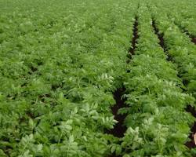
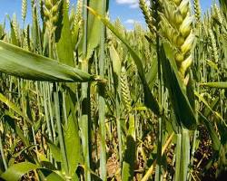
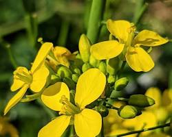
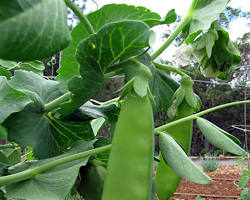
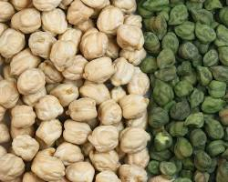

Potato is a starchy tuberous crop that is popular all over the world. It is a good source of vitamins and minerals, and it can be used in a variety of dishes. In India, potatoes are typically planted from November to March.
Wheat is a cereal grain that is the staple food of many people around the world. It is a good source of carbohydrates, proteins, and fiber. In India, wheat is typically planted from October to November.
Mustard is a leafy vegetable that is popular in India. It is a good source of vitamins and minerals, and it can be used in a variety of dishes. In India, mustard is typically planted from September to October.
Chickpeas are a legume that is popular in India. They are a good source of protein and fiber, and they can be used in a variety of dishes. In India, chickpeas are typically planted from October to November.
Peas are a legume that is popular in India. They are a good source of protein and fiber, and they can be used in a variety of dishes. In India, peas are typically planted from November to December.
